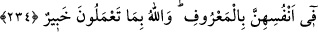

geçmeye yardımcı olur. Onlarla beraber oturup yemek ateşten beraattir, kurtuluştur.”
buyurulmuştur.
Yine hadis-i şerifte vârid olmuştur ki:
“Kul, dört çeşit nafakadan kıyâmet günü hesâba çekilmez. Bunlar; ana-babasına
verdiği, iftarda ve sahurda kullandığı ve ehl ü iyaline harcadığı nafakadır.”[183]
Lütuf ve merhamet çokça övülmüştür. Hadis-i şerifte buyurulmuştur ki:
“Kötü yollara düşmüş günahkâr bir kadın sıcak bir günde dilini sarkıtıp kuyunun
etrafında dönen bir köpek gördü. Ona kuyudan çıkarıp su verdi ve günahları
affolundu”[184]
Buhârî demiştir ki: Susuz köpeği gören kadın, ayakkabısını çıkarıp ona baş
örtüsünü bağladı. Sonra onunla su çıkarıp köpeğe verdi. Böylece günahları mağfiret
olundu.
Bu hadis-i şerif, büyük günahların iyi ameller sâyesinde kavlî olarak tevbe etmeksizin
affedilebileceğine delîl teşkil etmektedir. Ehl-i sünnet mezhebi de bu görüştedir. Yine
bu hadis, yemeye muhtaç birisine yediren kimsenin sevap kazandığına delâlet
etmektedir.
Akıllıya gereken kitap ve sünnet ile amel etmektir.
234. Sizden ölenlerin, geride bıraktıkları eşleri, kendi başlarına (evlenmeden)
dört ay on gün beklerler. Bekleme müddetlerini bitirdikleri vakit, kendileri
hakkında yaptıkları meşrû işlerde size bir günah yoktur. Allah yapmakta
olduklarınızı bilir.
“Teveffî” bir şeyi tam olarak almak, demektir. Âyetteki fiil, meçhûl okununca
“ölenler, ruhları kabzolunanlar” mânâsına gelir. Mâlûm okununca ise, “ecel ve
ömürlerini tamamlayanlar” anlamını taşır. Zaten ölen kişi, ömrünü tamamıyla yaşayıp
bitirmiş demektir.
“Ezvâc”, zevc kelimesinin çoğuludur. Nikâhlanmış kadın hem “zevc”, hem de “zevce”
olarak isimlendirilir. Fakat çoğunlukla “zevc” şeklinde kullanılır. Meselâ âyet-i
celîlede: “Ey Âdem! Eşin ve sen cennette kal” (el-Bakara: 2/35) buyurulmuş ve
burada Havvâ validemize “zevc” denilmişti.
Kocaları ölmüş kadınlar, dört ay on gün beklerler ki, eğer hâmile iseler,
rahimlerindeki çocuğun kime âid olduğu bilinebilsin. Bu müddet sona erinceye kadar
evlenemezler.